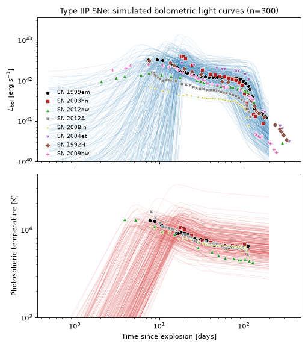
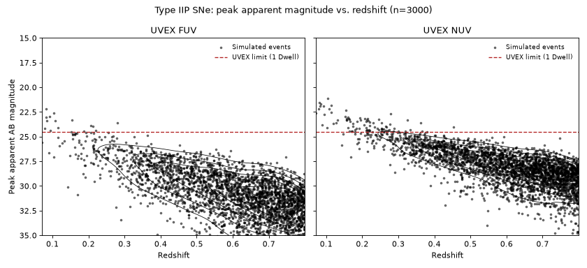
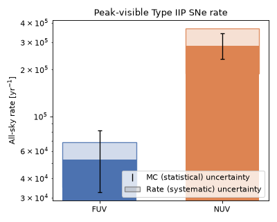
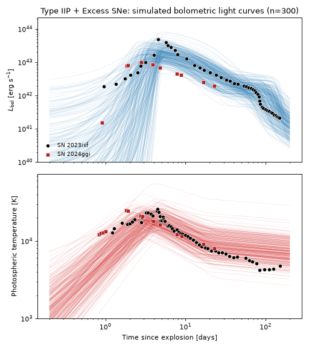
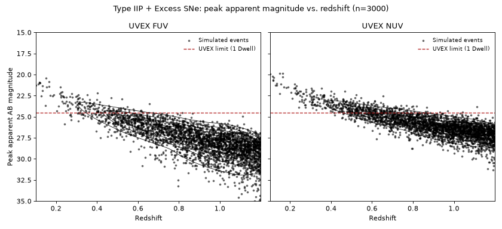
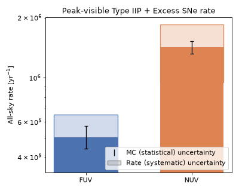
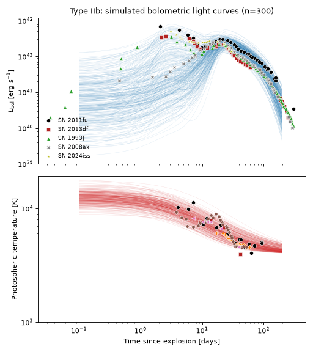
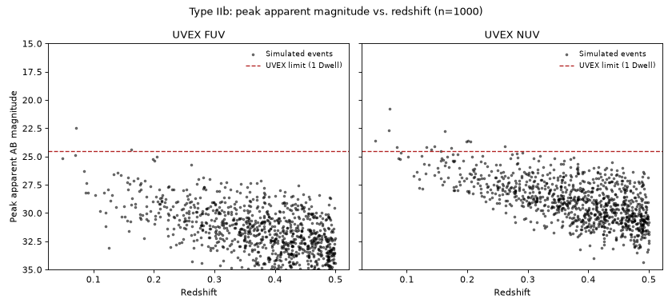
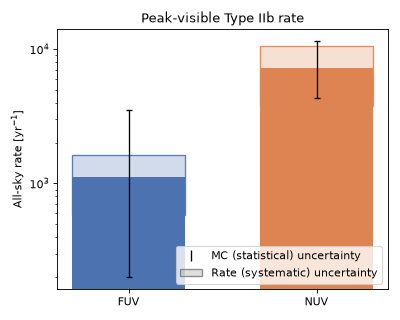

Type II Supernovae#
Type II core-collapse supernovae (CCSNe) are the explosions of massive stars that retained at least part of their hydrogen envelope. Type IIP events are the explosions of hydrogen-rich stars: an early cooling-phase decline (from the initial shock breakout) settles onto a weeks-to-months-long luminosity “plateau” as a recombination front recedes through the ejecta, followed by a radioactive tail powered by \(^{56}\mathrm{Co}\) decay. A subset show a brighter, hotter, faster early excess on top of this, attributed to shock breakout through and/or collisional heating of close circumstellar material – IXF/GGI-like objects, after the prototypes SN 2023ixf and SN 2024ggi. Both IIP variants share the same SED functional form and differ only in their parameter priors. Type IIb events, which lost most but not all of their hydrogen, are modeled with a different, double-pulse form. Each is implemented as its own transient population in a tab below. (Hydrogen-free Type Ib and Ic supernovae are covered on the Type I page.)
Implemented by TypeIIPSNe, pairing
TypeIIPSED with the rate/duration metadata
described below.
Quick Facts
Quantity |
Value |
Source |
Notes |
|---|---|---|---|
Rate |
\(R_\mathrm{CC}(z) = k\,\psi_\mathrm{UV}(z)\); Type IIP 48.7% of \(R_\mathrm{CC}(z)\) |
Strolger et al.[1], Madau and Dickinson[2], Li et al.[3], Shivvers et al.[4] |
Tracks the cosmic star-formation history. Li et al.[3] find II-P is
\(69.9^{+5.1}_{-5.8}\%\) of the Type II rate, which is itself
\(69.6\pm6.7\%\) of the total core-collapse rate [4], so
the Type IIP fraction of the CC rate is \(0.699\times0.696=0.487\). This chain,
combined in quadrature with the \(+27\%/-31\%\) uncertainty on
Strolger et al.[1]’s \(k\), gives
|
Redshift limit |
\(z = 0.8\) |
– |
Matched to ordinary Type IIP peak luminosities. |
Duration |
100 days |
– |
Covers the plateau and the transition to the (unmodeled) nebular phase. |
SED Model
TypeIIPSED is two shared-onset exponential
components (an early cooling-phase decline onto a constant plateau) plus a switched
radioactive tail, together with a smooth, doubly-broken power-law photospheric temperature
that reuses the light curve’s own \(t_0\)/\(t_P\):
with two logistic switches
\(S_0\) turns the photospheric emission on at the explosion/rise epoch \(t_0\); \(S_P\) turns it back off – and the radioactive tail on – at the plateau-end epoch \(t_P\). Between the rise and \(t_P\), \(L_\mathrm{bol}\) is an early cooling-phase decline from \(L_\mathrm{pk}\) onto a constant plateau \(L_p\); after \(t_P\) it switches to a pure radioactive-tail exponential.
The temperature law has three regimes – an early regime, a cooling-phase regime around \(t_0\), and a recombination/plateau regime around \(t_P\) – joined by two smooth breaks:
with \(t\) in days, so that \(T(t_0) \approx T_0\). With \(\alpha_r > 0 > \alpha_c > \alpha_p\), the temperature rises through the early, pre-\(t_0\) region (where \(L_\mathrm{bol} \approx 0\) anyway), peaks near \(t_0\), then declines – fast through the cooling regime and much more slowly through the recombination/plateau regime. \(s_0\)/\(s_1\) set the sharpness of the two breaks. The second break has no epoch of its own, so it is centered on the geometric mean of \(t_0\) and \(t_P\).
Parameter priors
Light-curve priors (t0 through tau_Co) come from fitting the light-curve model to
SN 1999em and SN 2003hn; temperature-law priors (T_0 through s_1) are hand-tuned
against the aggregate Type IIP temperature dataset in the plot below.
Parameter |
Symbol |
Prior |
Notes |
|---|---|---|---|
|
\(t_0\) |
Uniform(4 d, 20 d) |
Explosion/rise reference epoch. |
|
\(\tau_\mathrm{rise}\) |
Normal(\(\log_{10}(\tau_\mathrm{rise}/\mathrm{d})\); mean=0, \(\sigma\)=0.2) |
Rise timescale (median 1 d). |
|
\(L_\mathrm{pk}\) |
Normal(\(\log_{10}(L_\mathrm{pk}/\mathrm{erg\,s^{-1}})\); mean=42.48, \(\sigma\)=0.2) |
Early cooling-phase peak luminosity scale (median \(\sim3\times10^{42}\) erg/s). |
|
\(\tau_\mathrm{cool}\) |
Uniform(4 d, 10 d) |
Early cooling-phase decay timescale. |
|
\(L_p\) |
Normal(\(\log_{10}(L_p/\mathrm{erg\,s^{-1}})\); mean=42.1, \(\sigma\)=0.1) |
Plateau luminosity. |
|
\(t_P\) |
Uniform(50 d, 150 d) |
Plateau-end / radioactive-tail-onset epoch. |
|
\(\tau_\mathrm{drop}\) |
Fixed (10.5 d) |
Plateau-end transition width. |
|
\(L_\mathrm{Co}\) |
Normal(\(\log_{10}(L_\mathrm{Co}/\mathrm{erg\,s^{-1}})\); mean=41.39, \(\sigma\)=0.1) |
Radioactive-tail luminosity at |
|
\(\tau_\mathrm{Co}\) |
Fixed (111.4 d) |
Radioactive-tail decay timescale, fixed to the \(^{56}\mathrm{Co}\) e-folding time. |
|
\(T_0\) |
Normal(\(\log_{10}(T_0/\mathrm{K})\); mean=4.05, \(\sigma\)=0.1) |
Normalization: \(T(t_0) \approx T_0\) (\(\sim1.1\times10^4\) K). |
|
\(\alpha_r\) |
Normal(2, \(\sigma\)=0.2) |
Early-regime power-law index; \(T\) rises toward \(t_0\). |
|
\(\alpha_c\) |
Normal(-0.45, \(\sigma\)=0.1) |
Cooling-regime power-law index; \(T\) declines. |
|
\(\alpha_p\) |
Normal(-0.1, \(\sigma\)=0.01) |
Plateau-regime power-law index; \(T\) declines slowly. |
|
\(s_0\) |
Uniform(10, 20) |
Sharpness of the break at \(t_0\). |
|
\(s_1\) |
Uniform(10, 50) |
Sharpness of the break at \(\sqrt{t_0 t_P}\). |
Simulated Light Curves
The plot below draws 300 random parameter realizations from the priors above and shows the resulting bolometric light curves and photospheric temperatures, overlaid with the observed light curves and temperatures of several Type IIP SNe [5][6].
(Source code, png, hires.png, pdf)
{kind=link}
{kind=link}

Observability Summary
Below are the redshifts \(z\) and corresponding bandpass calculated peak apparent AB magnitudes \(m_\mathrm{AB}\) of 3000 simulated events drawn from the priors above, with the UVEX 1 Dwell limit of \(m<24.5\) overplotted. Because the bolometric light curve does not peak exactly at a single named parameter, the peak apparent magnitude is found by a numerical search over each event’s light curve rather than evaluated at a fixed time.
(Source code, png, hires.png, pdf)
{kind=link}
{kind=link}

The anticipated rate detectable by UVEX at these limits is as follows, assuming that any event above the \(m<24.5\) limit is detectable, and that the population is isotropic and homogeneous in comoving volume out to its redshift limit:
(Source code, png, hires.png, pdf)
{kind=link}
{kind=link}

Implemented by TypeIIPExcessSNe, pairing
TypeIIPExcessSED with the rate/duration
metadata described below. IXF/GGI-like: a bright, hot, fast early excess on top of the same
ordinary Type IIP evolution, attributed to shock breakout through and/or collisional heating
of close circumstellar material.
Quick Facts
Quantity |
Value |
Source |
Notes |
|---|---|---|---|
Rate |
30% of the Type IIP rate (14.6% of \(R_\mathrm{CC}(z)\)) |
Bruch et al.[7] |
Reflects the high incidence of early CSM-interaction signatures found among Type II
SNe (ZTF). The 30% multiplier has no published uncertainty of its own, so
|
Redshift limit |
\(z = 2\) |
– |
Higher than ordinary Type IIP, to admit this population’s brighter, more UV-luminous early-cooling realizations. |
Duration |
100 days |
– |
Same window as ordinary Type IIP. |
SED Model
TypeIIPExcessSED is a subclass of
TypeIIPSED: the same light curve and
temperature functional forms,
only with different parameter priors – an earlier, faster rise (t0, tau_rise), a
higher peak luminosity (L_pk) and normalization temperature (T_0), and a shallower
early-regime temperature index (alpha_r) – shifted to match the brighter, hotter, faster
early cooling phase seen in SN 2023ixf and SN 2024ggi, rather than the smoother early decline
of ordinary Type IIP SNe.
Parameter priors
Hand-tuned against SN 2023ixf [8] and SN 2024ggi
[9], the only two objects of this kind currently in
test_data/transients. Parameters not listed below (tau_drop, tau_Co) are
fixed to the same values as ordinary Type IIP.
Parameter |
Symbol |
Prior |
Notes |
|---|---|---|---|
|
\(t_0\) |
Uniform(2 d, 5 d) |
Explosion/rise reference epoch. |
|
\(\tau_\mathrm{rise}\) |
Normal(\(\log_{10}(\tau_\mathrm{rise}/\mathrm{d})\); mean=-0.5, \(\sigma\)=0.2) |
Rise timescale (median \(\sim0.3\) d). |
|
\(L_\mathrm{pk}\) |
Normal(\(\log_{10}(L_\mathrm{pk}/\mathrm{erg\,s^{-1}})\); mean=43.3, \(\sigma\)=0.25) |
Early cooling-phase peak luminosity scale (median \(\sim2\times10^{43}\) erg/s). |
|
\(\tau_\mathrm{cool}\) |
Uniform(4 d, 15 d) |
Early cooling-phase decay timescale. |
|
\(L_p\) |
Normal(\(\log_{10}(L_p/\mathrm{erg\,s^{-1}})\); mean=42.2, \(\sigma\)=0.2) |
Plateau luminosity. |
|
\(t_P\) |
Uniform(50 d, 150 d) |
Plateau-end / radioactive-tail-onset epoch. |
|
\(L_\mathrm{Co}\) |
Normal(\(\log_{10}(L_\mathrm{Co}/\mathrm{erg\,s^{-1}})\); mean=41.5, \(\sigma\)=0.3) |
Radioactive-tail luminosity at |
|
\(T_0\) |
Normal(\(\log_{10}(T_0/\mathrm{K})\); mean=4.2, \(\sigma\)=0.1) |
Normalization: \(T(t_0) \approx T_0\) (\(\sim1.6\times10^4\) K). |
|
\(\alpha_r\) |
Normal(1, \(\sigma\)=0.2) |
Early-regime power-law index; \(T\) rises toward \(t_0\). |
|
\(\alpha_c\) |
Normal(-0.45, \(\sigma\)=0.1) |
Cooling-regime power-law index; \(T\) declines. |
|
\(\alpha_p\) |
Normal(-0.1, \(\sigma\)=0.01) |
Plateau-regime power-law index; \(T\) declines slowly. |
|
\(s_0\) |
Uniform(10, 20) |
Sharpness of the break at \(t_0\). |
|
\(s_1\) |
Uniform(10, 50) |
Sharpness of the break at \(\sqrt{t_0 t_P}\). |
Simulated Light Curves
The plot below draws 300 random parameter realizations from the priors above and shows the resulting bolometric light curves and photospheric temperatures, overlaid with the observed light curves and temperatures of SN 2023ixf [8] and SN 2024ggi [9].
(Source code, png, hires.png, pdf)
{kind=link}
{kind=link}

Observability Summary
Below are the redshifts \(z\) and corresponding bandpass calculated peak apparent AB magnitudes \(m_\mathrm{AB}\) of 3000 simulated events drawn from the priors above, with the UVEX 1 Dwell limit of \(m<24.5\) overplotted.
(Source code, png, hires.png, pdf)
{kind=link}
{kind=link}

The anticipated rate detectable by UVEX at these limits is as follows, assuming that any event above the \(m<24.5\) limit is detectable, and that the population is isotropic and homogeneous in comoving volume out to its redshift limit:
(Source code, png, hires.png, pdf)
{kind=link}
{kind=link}

Type IIb supernovae are core-collapse explosions of massive stars that have been stripped of most,
but not all, of their hydrogen envelope. Many show a double-peaked light curve: an early, hours-
to-days-long flash powered by the shock heating and subsequent cooling of the extended envelope,
followed – after a dip – by a broader, weeks-long peak powered by radioactive
\(^{56}\mathrm{Ni}\) decay, the same mechanism that powers most other core-collapse SN light
curves. Others show only the single, radioactively powered peak, with no resolved early bump.
Where ShockCoolingIIb models only the shock-cooling
component from first principles, this population is a purely phenomenological light curve intended
to span the whole population – single- and double-peaked events alike – in a single functional
form.
This population is implemented by
TypeIIbSNe, pairing
TypeIIbSED with the rate/duration metadata
described below.
Note
The priors below are broad, order-of-magnitude-motivated ranges, not yet a fit to any specific
real Type IIb event. This page will be updated if/when they are recalibrated against data (as
TypeIIPSED was).
Quick Facts
Quantity |
Value |
Source |
Notes |
|---|---|---|---|
Rate |
\(R_\mathrm{CC}(z) = k\,\psi_\mathrm{UV}(z)\); Type IIb 10.3% of \(R_\mathrm{CC}(z)\) |
Strolger et al.[1], Madau and Dickinson[2], Shivvers et al.[4] |
Tracks the cosmic star-formation history. Shivvers et al.[4] find IIb is
\(34.0\pm11.1\%\) of the stripped-envelope (SESNe) rate, which is itself
\(30.4^{+5.0}_{-4.9}\%\) of the total core-collapse rate, so the Type IIb fraction
of the CC rate is \(0.340\times0.304=0.103\). Combined in quadrature with
Strolger et al.[1]’s \(+27\%/-31\%\) normalization uncertainty, this gives
|
Redshift limit |
\(z = 0.5\) |
– |
Tighter than the \(z = 1\) bound of |
Duration |
200 days |
– |
Long enough to cover the shock-cooling peak (where present), the dip, the radioactive main
peak, and its subsequent decline – unlike
|
SED Model
TypeIIbSED pairs a superposition of two Bazin
pulses with the same single-power-law cooling blackbody photosphere used elsewhere in this package
(e.g. VillarCoolingBlackbodySED):
The light curve is delegated directly to
TwoComponentBazinLightcurve: two ordinary
BazinLightcurve pulses, added rather than
multiplied – an early one centered on \(t_0\) standing in for the shock-cooling peak, and a
later one centered on \(t_1\) for the radioactively powered main peak. Because the two
components are independent and additive, a single functional form covers both populations at once:
with the early component’s amplitude \(A_0\) much smaller than the main peak’s \(A_1\),
only the main peak is visible (a single-peaked event); with \(A_0\) comparable to \(A_1\),
both peaks show, with a dip between them where each pulse has decayed enough for the other to
dominate (a double-peaked event). This fits real double- and single-peaked Type IIb light curves
better than a single pulse reshaped by a multiplicative modulation.
Parameter priors
amplitude_0 – the early peak’s normalization – is uniform in
\(\log_{10}(A_0/\mathrm{erg\,s^{-1}})\) between 39 and 43, i.e. from
\(10^{39}\) to \(10^{43}\ \mathrm{erg\,s^{-1}}\): far fainter than the main peak (an
effectively single-peaked draw) up to brighter than it (a double-peaked, or even
early-peak-dominated, draw); roughly a third of draws from the priors below are double-peaked.
t0 and T_floor are held fixed; every other parameter is drawn from a broad Uniform (or,
for amplitude_1/T0, Normal-in-log) prior.
Parameter |
Symbol |
Prior |
Notes |
|---|---|---|---|
|
\(A_0\) |
LogUniform(\(10^{39}\), \(10^{43}\ \mathrm{erg\,s^{-1}}\)) |
Early, shock-cooling peak normalization; spans negligible to brighter than the main peak. |
|
\(t_0\) |
Fixed (2 d) |
Transition time of the early peak. |
|
\(\tau_{\mathrm{rise},0}\) |
Uniform(0.3 d, 1 d) |
Logistic rise timescale of the early peak. |
|
\(\tau_{\mathrm{fall},0}\) |
Uniform(3 d, 10 d) |
Exponential decline timescale of the early peak. |
|
\(A_1\) |
Normal(\(\log_{10}(A_1/\mathrm{erg\,s^{-1}})\); mean=42.5, \(\sigma\)=0.1) |
Main, radioactively powered peak normalization (median \(\sim3\times10^{42}\) erg/s). |
|
\(t_1\) |
Uniform(10 d, 20 d) |
Transition time of the main peak. |
|
\(\tau_{\mathrm{rise},1}\) |
Uniform(2 d, 4 d) |
Logistic rise timescale of the main peak. |
|
\(\tau_{\mathrm{fall},1}\) |
Uniform(30 d, 55 d) |
Exponential decline timescale of the main peak. |
|
\(T_0\) |
Normal(\(\log_{10}(T_0/\mathrm{K})\); mean=4.1, \(\sigma\)=0.05) |
Photospheric temperature as \(t \to 0\) (median \(\sim1.3\times10^4\) K). |
|
\(T_\mathrm{floor}\) |
Fixed (\(4\times10^3\) K) |
Asymptotic late-time photospheric temperature. |
|
\(\tau_T\) |
Uniform(5 d, 10 d) |
Photospheric cooling timescale. |
|
\(\alpha_T\) |
Uniform(0.7, 1.3) |
Photospheric cooling power-law index. |
Simulated Light Curves
The plot below draws 300 random parameter realizations from the priors above and shows the
resulting bolometric light curves and photospheric temperatures, overlaid with the observed
light curves and temperatures of several Type IIb SNe
[10][11][12][13][14][15].
The spread illustrates the single-/double-peaked split described above: most realizations show
only the main peak, with a minority showing a distinct early bump or, at the high end of the
amplitude_0 prior, an early-dominated light curve – both SN 1993J and SN 2011fu are
well-known double-peaked events, and show up as such in the overlaid data.
(Source code, png, hires.png, pdf)
{kind=link}
{kind=link}

Observability Summary
Below are the redshifts \(z\) and corresponding bandpass peak apparent AB magnitudes \(m_\mathrm{AB}\) of 1000 simulated events drawn from the priors above, with the UVEX 1 Dwell limit of \(m<24.5\) overplotted. The peak apparent magnitude is found by a numerical search over each event’s light curve, since neither peak sits at a single named parameter once both components contribute.
(Source code, png, hires.png, pdf)
{kind=link}
{kind=link}

The anticipated rate detectable by UVEX at this limit is as follows, assuming that any event above the \(m<24.5\) limit is detectable, and that the population is isotropic and homogeneous in comoving volume out to its redshift limit:
(Source code, png, hires.png, pdf)
{kind=link}
{kind=link}
